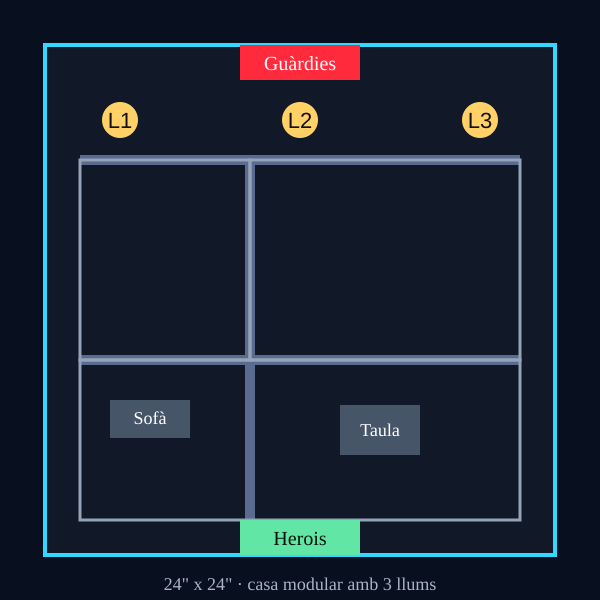

Investigació - Casa encantada
La Casa de Joyce
Casa de Joyce24" x 24" - Tutorial
d'interaccions

Les llums de Nadal parpellegen sense ritme. Joyce assenyala l'alfabet
pintat a la paret. "No estic boja", diu. I llavors una bombeta escriu:
CORRE.Primera nit
Els herois han de protegir Joyce i descobrir el primer missatge de Will abans que els guàrdies de la torre arriben.
Regles de missió
- Enemics inicials: 3 guàrdies de l'orde en la vora nord.
- Herois: juga amb Mike + Hopper (190 pts). Eleven encara no participa.
- Objectiu principal: activar 3 llums de Nadal amb interaccions en contacte.
- Objectiu secundari: Joyce no pot ser capturada.
- Alarma: al final de la ronda 3 entren 3 guàrdies més si no hi ha 2 llums activades.
- Victòria: amb 3 llums activades, Will envia una pista cap al bosc.
- Recompensa: 1 XP i marca
Will localitzat parcialment.
Terreny
- Sofà, taula i parets: cobertura.
- Llums: objectius.
- Porta principal i cuina: entrades enemigues.
Dificultat
- Més fàcil: els reforços entren en ronda 4.
- Més difícil: un demogosset apareix quan s'activa la tercera llum.